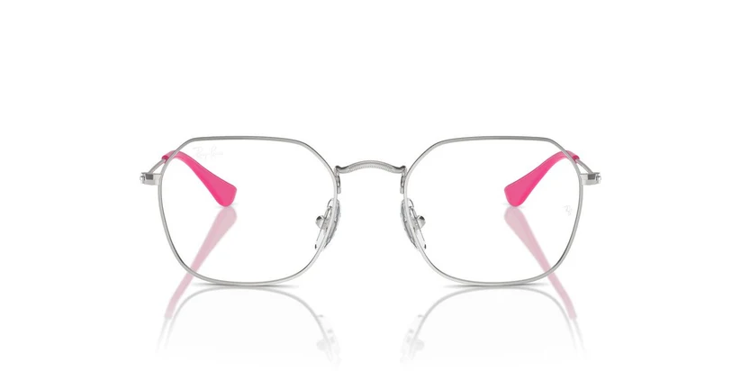

RAY-BAN

RAY-BAN
Happy Frame - RB998
Promociones aplicadas:
OBTÉN 50% 2DO PAR- Resistencia Infantil
Metal ligero y resistente. - Satisfacción garantizada
Ajuste gratis a medida.
PRECIO:
S/185
Hasta 12 cuotas sin interés - Valor cuota: S/ 15.41
Acerca de la montura
Detalles de la montura
∧| Característica | Especificación Técnica |
|---|---|
| Material | Metal |
| Forma | Hexagonal Junior |
| Color | Plata/Fucsia |
| Género | Niños |
| Producto original con certificación de calidad G&A | |
Medidas de la montura
∧| Medida | Dimensión |
|---|---|
| Tamaño de las lunas | 47mm |
| Ancho del puente | 16mm |
| Largo de la varilla | 130mm |
| Medidas expresadas en milímetros (mm) | |
Acerca de RAY-BAN
∧
Ray-Ban Junior ofrece versiones adaptadas de los modelos más icónicos de la marca. Diseñados específicamente para niños, estas monturas metálicas mantienen el estilo legendario de Ray-Ban mientras aseguran proporciones perfectas y materiales seguros para su visión.